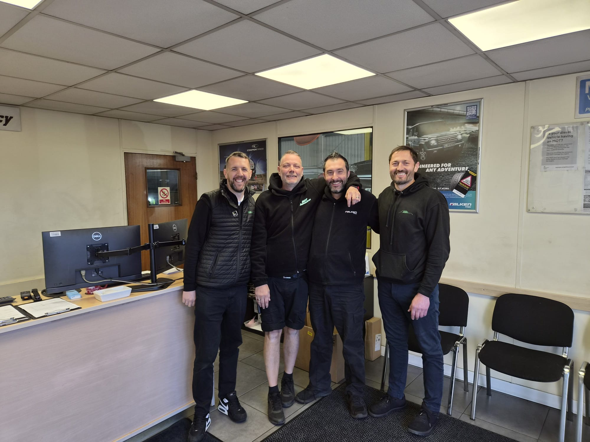

Hi everyone,
This month has reminded me of two things that are helping us build the best autocentres in the country. One is how we look after our teammates and customers every day. The other is the opportunity we have to build a career in this industry.
Firstly, Blue Peter Garage have won the Monthly Performance Trophy again! A huge congratulations to the whole team. When I asked what was behind their recent success, they talked about helping each other out, making customers feel welcome and getting together for lunch. I really liked that lunch got a mention. I know how hard everyone works, and it’s inspiring to hear the team put their success down to the way they look after each other and their customers.
Secondly, I’m really pleased to celebrate a milestone at Winchester, where Adrian marked 20 years with the business this month. Adrian joined as an apprentice and went on to complete his Advanced Apprenticeship and his Level 2 and 3 Diplomas. He qualified as an MOT Tester and has kept learning as the industry has changed, including Electric/Hybrid safety, Level 3 Air Con and, most recently, First Aid.
Adrian is now Assistant Manager at our Winchester branch alongside his Manager Lee. You can see them both in the photo below. They’ve been doing great work together for over 20 years, and I’m very grateful to them both. Adrian’s journey from apprentice to management is exactly the kind of opportunity we want others in the group to have, and I hope we can help many more of you develop your careers in the years ahead.
Congratulations again to Adrian and the Blue Peter team, and thank you all for the work you do every day.
Best,
Tobyn
Celebrating Adrian’s 20 Years at Winchester

Blue Peter Garage Trophy Winners